STAY
Maison Saint LaFleur — your private New Orleans home base.
EXPLORE →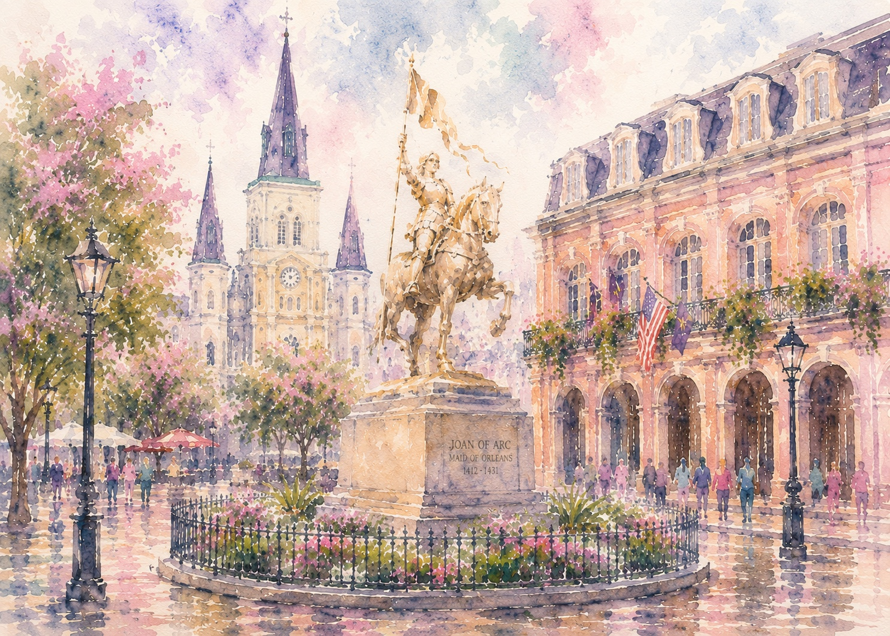
good friends, great food,
unforgettable nights ♥
CURATED EXPERIENCES FOR AN EPIC WEEKEND
IN THE BIG EASY
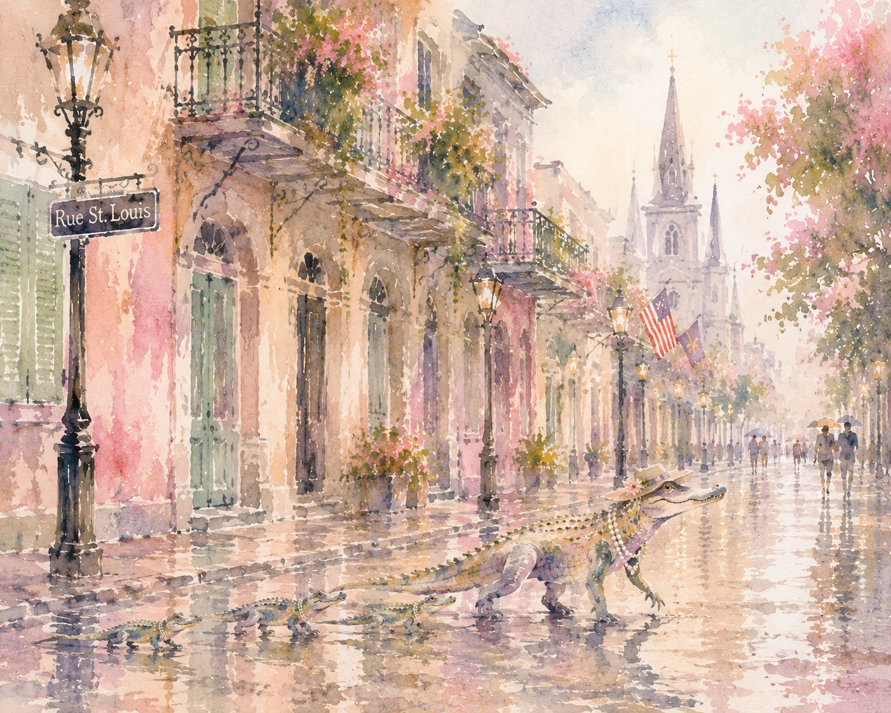
your perfect weekend starts here ♥
Designed like a hand-painted travel journal, with the best of New Orleans organized into the moments that make a bachelorette weekend unforgettable.
Maison Saint LaFleur — your private New Orleans home base.
EXPLORE →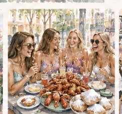
Crawfish boils, beignets & beautiful tables worth dressing up for.
EXPLORE →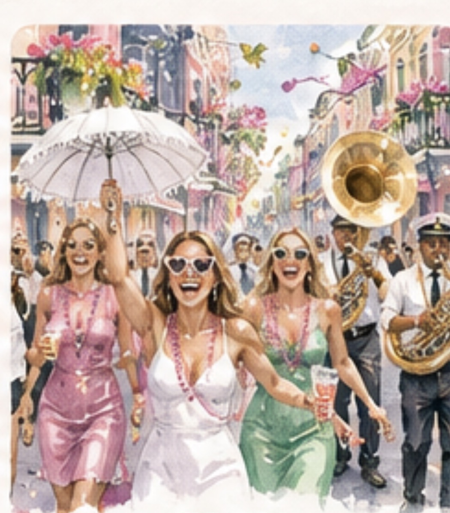
Second lines, live music, day adventures & only-in-NOLA experiences.
EXPLORE →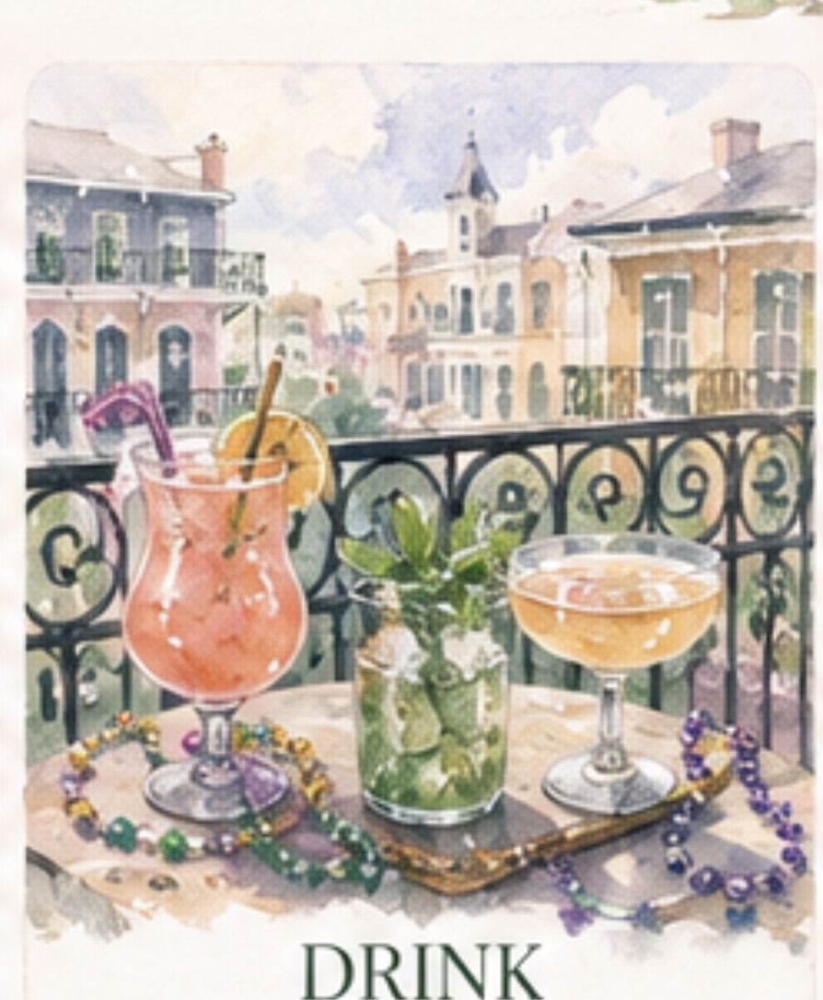
French 75s, rooftops, wine bars & cocktails worth dressing up for.
EXPLORE →
Nightlife, dancing, bottle service & celebrations after dark.
EXPLORE →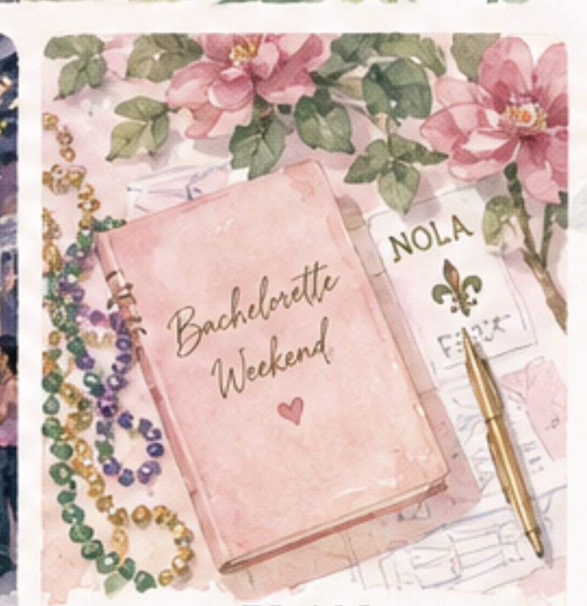
Itineraries, timing, transportation & the details that keep it easy.
EXPLORE →YOUR HOME IN THE HEART OF
THE FRENCH QUARTER
Charming. Luxurious. Uniquely New Orleans.
An 1861 Creole cottage with modern luxury, Maison Saint LaFleur is the perfect place to gather, celebrate, and make unforgettable memories with your girls.
CREOLE COOKING EXPERIENCESBook a private Creole cooking experience in the fully-equipped chef's kitchen.
COCKTAIL EXPERIENCEEnjoy a curated cocktail experience with local mixologists in the parlor or on the courtyard patio.
UNBEATABLE LOCATIONSteps to the streetcar, a short walk to Frenchmen Street, and surrounded by New Orleans' best restaurants, shops, and hidden gems.
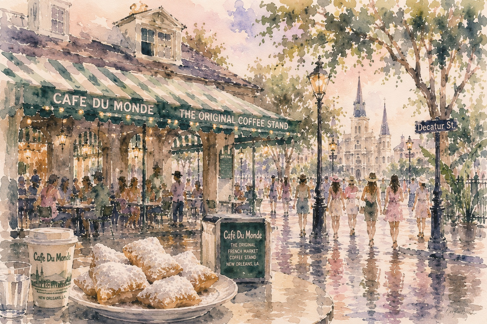
powdered sugar is part of the dress code ♥
Start with an iconic beignet stop, but do not make the mistake of treating New Orleans dining as an afterthought. Build at least one dinner around a room that feels special enough for the occasion and a kitchen that is worth the reservation.
Upscale, atmospheric, distinctly New Orleans — and chosen for a bachelorette weekend that cares as much about dinner as the photos.
A jewel-box Gulf seafood experience: choose the intimate five-course Club Room tasting menu or oysters, Champagne, martinis and caviar at the Oyster Bar.
BEST FOR: A GLAM SEAFOOD NIGHT ↗ CAJUN · UPTOWNA story-driven, multi-course celebration of Louisiana fishermen, farmers and bayou cooking. Private tables make it especially compelling for a group dinner.
BEST FOR: A TRUE LOUISIANA EXPERIENCE ↗ WAREHOUSE DISTRICTChef Nina Compton's acclaimed mix of Caribbean influence, French technique and Louisiana ingredients, paired with a standout cocktail program and warm, refined room.
BEST FOR: COCKTAILS + DINNER ↗ BYWATER · TASTING MENUAn intimate ten-course progressive tasting experience with natural wine in a double-shotgun house. Exceptional for a smaller bridal group; tables seat up to four.
BEST FOR: THE FOOD-OBSESSED CREW ↗ FRENCH QUARTER · FINE DININGPolished, celebratory dining with imaginative takes on classic Cajun and Creole cuisine, plus private dining rooms if you want the dinner to feel like an event.
BEST FOR: THE BIG DRESS-UP DINNER ↗ LOWER FRENCH QUARTERA modern European brasserie with Creole influence, elegant cooking, strong wine direction and an intimate French Quarter corner setting.
BEST FOR: PARIS-MEETS-NOLA ENERGY ↗ FRENCH QUARTER · ITALIANAn enduring French Quarter favorite with Sicilian roots and an intimate, homey atmosphere — ideal when the group wants something romantic and classic rather than trendy.
BEST FOR: A WARM CLASSIC DINNER ↗ GARDEN DISTRICT · DINNERColorful, glamorous and celebratory — a natural girls' dinner when the group wants a lively room, cocktails, bubbles and a night that feels dressed up from the first round.
BEST FOR: A GLAMOROUS GIRLS' DINNER ↗ WAREHOUSE DISTRICT · TASTING MENUA true splurge night built around contemporary Louisiana fine dining and a seasonally evolving tasting menu. Choose this when dinner itself is one of the weekend's headline experiences.
BEST FOR: FINE-DINING TASTING MENU ↗ FRENCH QUARTER · NEW ORLEANS TRADITIONThe grand old-school New Orleans experience: a pink Royal Street landmark, classic Creole cooking, tableside service and the birthplace of Bananas Foster.
BEST FOR: SOMETHING TRADITIONALLY NEW ORLEANS ↗ BYWATER · OMAKASEAn intimate, hard-to-book omakase from Chef Kazuyuki “Kaz” Ishikawa, built around creative contemporary sushi and a tiny chef-led dining experience. A special pick for the sushi-obsessed group.
BEST FOR: AN INTIMATE SUSHI SPLURGE ↗ FRENCH QUARTER · STEAKHOUSEA polished modern steakhouse with Middle Eastern influence, serious in-house dry-aged beef, caviar, cocktails and an extensive wine list — ideal when the group wants steak without the old-school steakhouse feel.
BEST FOR: STEAK NIGHT ↗From a relaxed recovery breakfast to live jazz in the French Quarter, these are the weekend brunch stops worth building into the itinerary.
A smart recovery-morning pick with serious coffee, creative breakfast plates and plenty of vegan, vegetarian and gluten-free options for a group with different tastes.
BEST FOR: THE MORNING-AFTER BRUNCH ↗ JACKSON SQUARE · JAZZ BRUNCHA quintessential French Quarter jazz brunch: live trio, classic New Orleans rhythms, Creole brunch and a beautiful setting beside Jackson Square. The wraparound balcony makes it especially memorable for a bachelorette weekend.
BEST FOR: JAZZ BRUNCH + FRENCH QUARTER VIEWS ↗ GARDEN DISTRICT · LUNCH / JAZZ BRUNCHOne of the quintessential New Orleans celebration meals. Go Wednesday through Friday for the famous 25¢ martini lunch with an entrée, or make it a weekend event with the legendary Saturday or Sunday jazz brunch.
BEST FOR: 25¢ MARTINIS + JAZZ BRUNCH ↗When everyone is a little tipsy and suddenly starving, skip the generic fast food and make the French Quarter move locals have been making for years.

one block, five songs, change your plans ♥
Frenchmen works best as a loose crawl. Start early enough to hear a first set, peek into the rooms as you walk, and stay where the band is right. The Spotted Cat, d.b.a., Blue Nile and Maison are clustered close enough that the night can evolve without a rigid schedule. If the group wants one legendary New Orleans music room beyond Frenchmen, check the calendar at Tipitina's and build a night around the show.
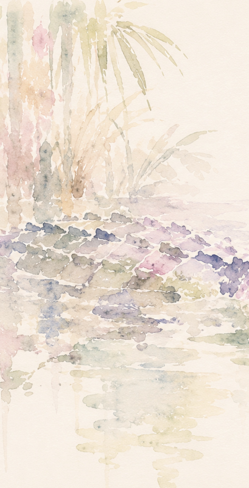
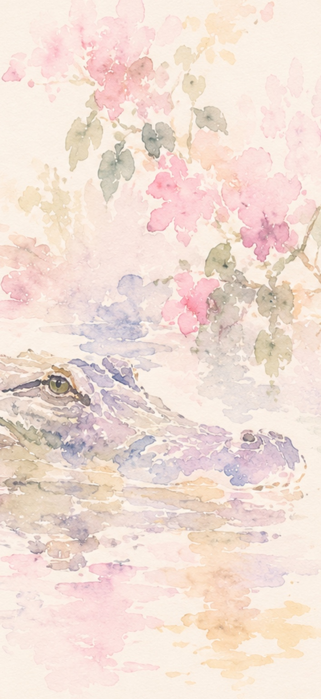
cocktails before chaos ♥
Use cocktail hour as the hinge between day and night: a balcony drink, Champagne before dinner, or a serious cocktail bar where everyone can arrive dressed and regroup before the evening gets louder.
the best party is not always on Bourbon ♥
Do one high-energy night if that is the group's vibe, but balance it with live music, cocktail bars and a dinner that lets everyone enjoy the city instead of spending the entire weekend in one entertainment corridor.
have fun — just know the terrain ♥
Making Bourbon Street the whole itinerary. See it, laugh, take the photo, then keep exploring.
Over-scheduling. New Orleans rewards wandering, long dinners and changing plans when you hear a better band around the corner.
Long walks alone late at night. Keep the group together and use a rideshare when the next stop is not an easy, busy walk.
Ignoring heat, weather and shoes. A beautiful itinerary is less beautiful when everyone is exhausted before dinner.
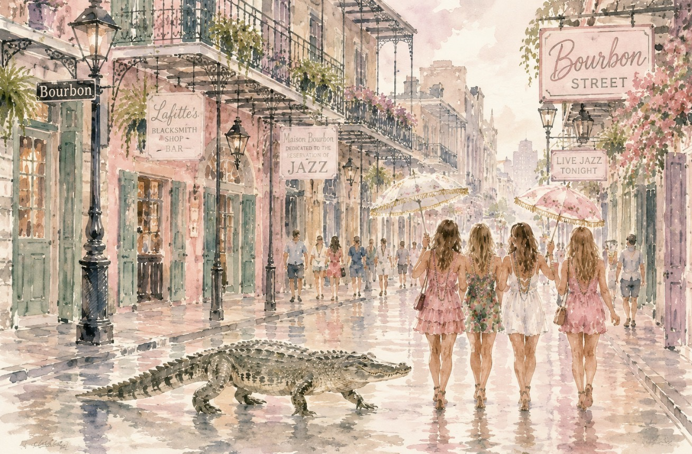
Book the house, one special dinner, one signature New Orleans experience and the hardest reservation first. Leave enough white space for beignets, a Frenchmen detour, a courtyard drink or the place someone discovers while walking.
START WITH WHERE YOU'LL STAY →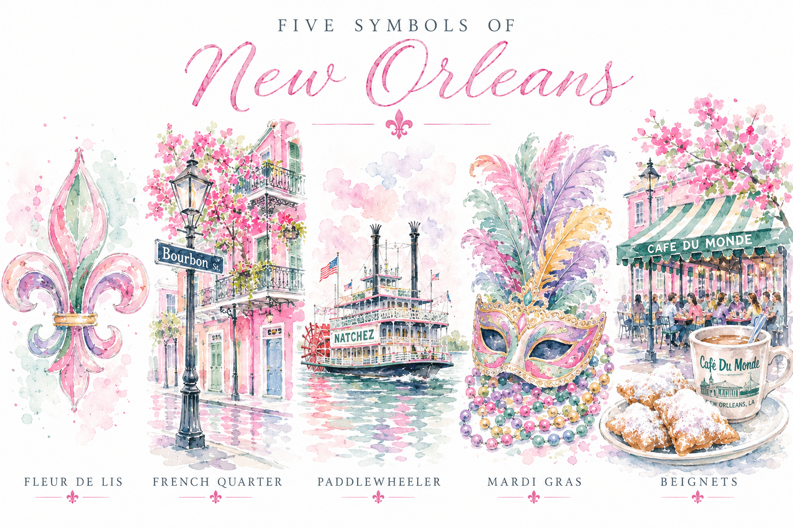